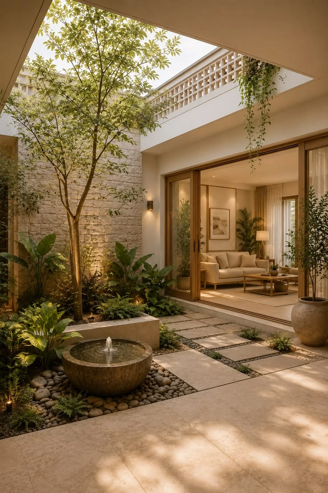
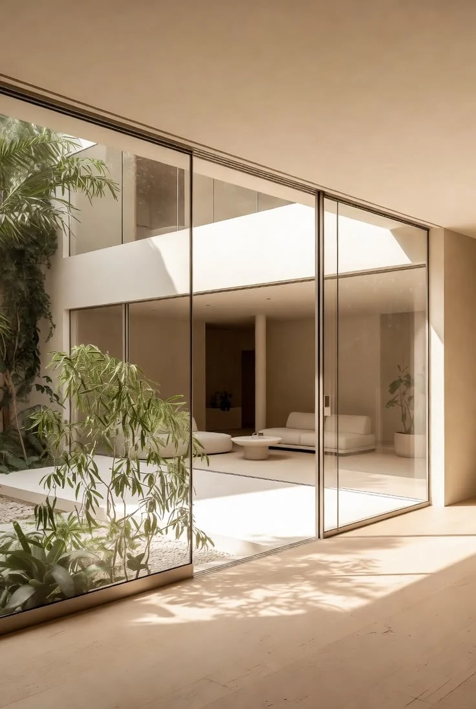
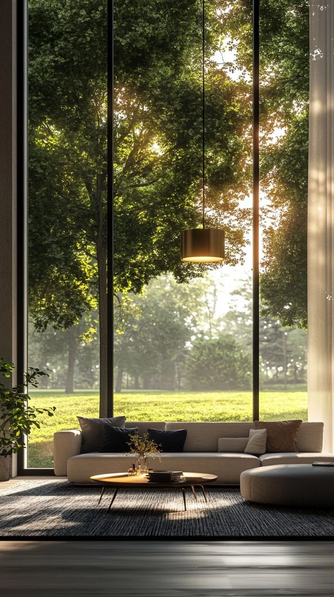

Architecture,carried through.
One studio for architecture, interiors, documentation and execution — so the idea you approve is the space you get.
Our approach →Where good design
gets lost.
Most projects don't fail at the idea. They fail in the space between the people who imagine, draw, price and build it. We close that space.
The handover gap
Design passes between teams and quietly loses its intent.
Drawings that stop short
Beautiful concepts without the detail needed to build them.
Cost that arrives late
Budget surprises appear after decisions are already made.
Intent that drifts
On site, small compromises add up to a different building.
Design does not end when the image looks right. It continues through every drawing, specification, decision and detail — until the idea is a place.

Neoarchis was set up around a simple belief: the architect who designs a space should stay accountable for how it is detailed, priced and built.
So design, documentation and execution sit under one roof, one team and one set of decisions. Fewer handovers. Fewer compromises. A result that looks like the drawing.
Listen
Understand the brief, site, people, budget and timeline before the first line is drawn.
Shape
Architecture, interiors and visualisation turn intent into a spatial idea.
Resolve
Working drawings, details, materials and specifications make it buildable.
Align
Consultants, vendors, cost and schedule stay connected to one direction.
Build
Procurement, fabrication, installation and quality control on site.
Hand over
A finished, usable place — light, material and life brought together.
Many disciplines.
One direction.

Architecture
Concept to planning to form — buildings that respond to site, light and the way people move through them.
- Concept
- Planning
- Visualisation
Interior Design
Space planning, materials and detail resolved with the architecture, never layered on afterwards.
- Space planning
- Materials
- Detailing
Documentation
Drawings and specifications precise enough to price accurately and build without guesswork.
- Working drawings
- Specifications
- Approvals
Execution
Procurement, fabrication and site coordination, so what is built matches what was approved.
- Procurement
- Fabrication
- Site quality
Homes shaped around how people actually live.
Workplaces and venues built to perform.
Spaces where brand becomes experience.
The less visible work is what lets the visible work exist.
Every drawing, specification, estimate and approval is part of carrying an idea forward. That is the work we are built around.
Architecture
in atmosphere.
Visual studies and material references for the Neoarchis world — not completed Neoarchis projects.
